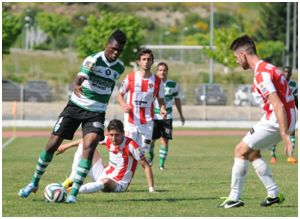

Manutenção selada
Covilhã bate Leixões por 1-0 e garante manutenção
O Sporting da Covilhã regressou às vitórias após 17 jornadas sem ganhar e, na penúltima ronda do campeonato, assegurou a permanência na II Liga, ao bater por 1-0 o Leixões, que também assegurou a manutenção no segundo escalão do futebol nacional.
Os serranos voltaram a vencer quase quatro meses depois, num encontro em que o resultado foi justo, face ao produzido pelas duas formações. Embora a jogar com pouca intensidade, os Leões da Serra foram sempre a equipa mais determinada, mas ficam a dever os três pontos em grande parte ao factor sorte, já que os leixonenses acertaram por duas vezes no poste. Valeram Joel e Gilberto para aliviar a bola no limite. Jorge Batista, o guarda-redes ex-Covilhã, foi outro obstáculo para o emblema orientado por Francisco Chaló. Quando chamado a intervir, cumpriu com eficácia e negou o golo a Adriano, Gilberto e Kizito.
Numa primeira parte jogada a um ritmo lento, o Sporting da Covilhã foi a equipa mais dominadora. Ao minuto 21 Carlos Manuel, em posição privilegiada, optou por passar a bola, quando devia ter rematado, e permitiu o corte de João Viana. Janício também fez pontaria à baliza, mas Jorge Batista agarrou junto ao poste.
À meia hora de jogo o guardião do Leixões travou o remate de longe, em arco, de Adriano. A resposta leixonense chegou já perto do intervalo, quando João Novais, de muito longe, tentou surpreender Taborda. Já nos descontos os visitantes criaram a melhor ocasião de golo, por intermédio de Moreira, que da direita, com Taborda já batido, atirou em arco, a bola acertou no poste e quando se dirigia para dentro da baliza, junto ao segundo poste, Joel evitou o golo, aliviando o esférico de cabeça.
No reatamento, o Covilhã podia ter inaugurado o marcador, mas Jorge Batista negou o golo a Gilberto, depois do médio ter ganhado a bola no meio campo, ter progredido no terreno, tabelado com Gui e tentado o golo. Na outra baliza Moreira ainda atirou às malhas laterais, só que foram os serranos a voltar a criar perigo.
Na pequena área Kizito, assistido por Báta, que por duas vezes antes não teve o engenho necessário para cruzar, ameaçou de cabeça as redes de Jorge Batista, que desviou por cima da barra.
Os Leões da Serra chegaram ao golo ao minuto 72, de bola parada. Num livre apontado por Carlos Manuel, na esquerda, o capitão Edgar tentou o cabeceamento no coração da área, onde também se encontrava Janício, mas a bola acabou por bater nas costas do defesa João Pedro e traiu o guardião nortenho.
Pouco depois Zola, acabado de entrar, esteve à beira da igualdade. Na marcação de um canto o extremo mergulhou de cabeça na área e o remate levava selo de golo, mas Gilberto aliviou a bola em cima da linha limite e ainda embateu no poste.
publicado em: quarta-feira, 14 de Maio de 2014